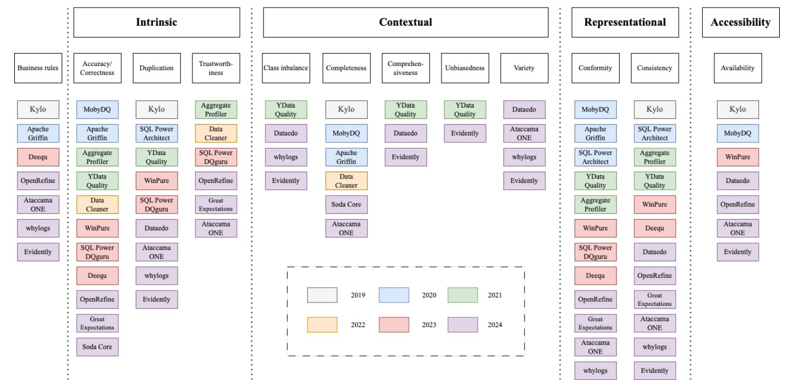

Data Quality

- Point 1 about the research topic.
- Point 2 explaining the focus.
- Point 3 with key findings.
Edge Computing based Optimization
A key point about this research topic goes here.
Blockchain Framework

This research focuses on:
- Key area 1
- Key area 2
Security

A key point about this research topic goes here.